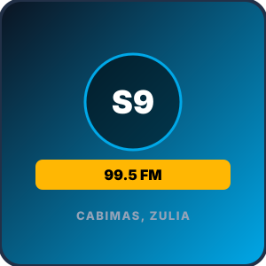

Sector Las 40s / Casco Central — Cabimas, Zulia, Venezuela
¡Radio Libre y Alternativa al Servicio de Todos! Dirección general de Luis Medina, transmitiendo cercanía comunitaria y música para Cabimas. Sonora 99.5 FM es una estación de radio que transmite su señal en vivo desde Sector Las 40s / Casco Central, en Cabimas, Estado Zulia. Reconocida por su aporte comunicacional a la Costa Oriental del Lago, su propuesta sonora combina lo mejor de radio libre, alternativa, comunitaria, brindando a los oyentes cabimenses entretenimiento continuo, actualidad informativa y una selección musical representativa de la identidad zuliana y nacional. Transmitiendo en la frecuencia 99.5 FM, la emisora mantiene una presencia activa tanto en el dial como a través de su señal digital en streaming, conectando a los habitantes de Cabimas con la diáspora en el resto de Venezuela y el mundo.
| Dial | 99.5 FM |
| Municipio | Cabimas |
| Sector | Sector Las 40s |
| Estado | Zulia, Venezuela |
| Coordenadas | 10.4050° N, 71.4410° W |
| Transmisión | Streaming Directo |